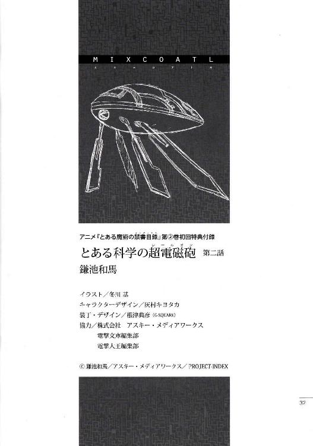
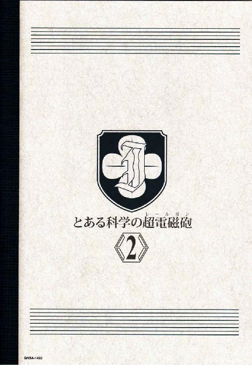

| [鎌池和馬] とある科学の超電磁砲2 | |
| 鎌池和馬 | |
| (2015) | |
|
アニメ『とある魔術の禁書目録』
第②巻初回特典付録
|
とある科学の超電磁砲

第二話
学芸都市。
カリフオルニアの沿岸から西へ五〇キロ進んだ洋上に作られた、世界最大級の巨大人工島。とある映画撮影後、一種のテーマパークとして大改装されたこの学芸都市は、映画大国アメリカが、その外貨獲得価値を恒久的なものとするべく、日夜新たな撮影技術を研究・開発するための大型施設としても機能していた。
世界の第一線で活躍する映画関係者が生み出す娯楽の数々を、どこよりも早く導入、提供していく、刺激と幻想に溢れたアトラクション集合体。
しかし御坂美琴は知る。
この街では、ありとあらゆる異常事態が『アトラクションショー』として処理されてしまう事。たとえ目の前で人が撃たれたとしても、『うわー、お客さんの中に役者が紛れているとは』『それにしても、演技と分かっていても痛々しい』『血糊もリアルだし、流石は映画の国だな』程度で済まされてしまう事を。
死体を見ても驚かない空間。
その上これは、何らかの偶然で発生したものではない。
佐天涙子は、
「すごーい！ 御坂さん、一体いつゲスト出演の交渉してたんですか!?」
本物の事件に巻き込まれた美琴を見ても、ショーの一環としか考えなかった。
初春飾利は、
「がっ、学園都市の能力って、そんな風に公開しちゃって良かったんでしたっけ？」
ちょっと心配していたが、心配する方向がほのぼのとズレていた。
白井黒子は、
「......お姉様？」
わずかに訝しんだが、それでも事件や戦いとは無縁の所にいた。
そして、
御坂美琴は......、
「......どうなってんのよ......」
ポツリと、彼女は呟いた。
誰にも聞こえないであろう小さな声で、忌々しそうな感情を乗せて。
「......一体、この街で何が起きてんのよ......？」
ぶいーん。
「うあーあああああああああああああああああああああああああああああ」
ふおーん。
「むぎゃーああああああああああああああああああああああああああああ」
ぶしゃー。
「ふにゃーああああああああああああああああああああああああああああ」
初春飾利は一通りそんな声を出すと、ホテルの近くにズラリと並んだ個室シャワーの一つから出てきた。今日一日、日が暮れるまでずーっと海で遊んでいたはずだが、柔らかい肌についた潮水は全て洗い流されているし、それどころか、髪も皮膚も水着も、その全てが一滴の水滴すらついておらず、潮の匂いすら感じられない。
まるで買ってきたばかりのような布地を軽く引っ張って確かめていると、初春のクラスメイトである佐天涙子が片手をぶんぶん振りながら接近してきた。
辺りも暗くなり、テーマパーク特有の極彩色のライトアップに照らされても、佐天はいつも通りの佐天だった。
「おーう初春。どうだった？ なんかぶおーんっていうのすごかったよねぇ!!」
「全身乾燥機でしたっけ？ それにしても、着ている水着ごと体を洗浄、乾燥させるなんて、ものすごく大雑把な仕組みですよね......」
「まぁあれだよ。ホテルのベッド以外は基本、水着で過ごすじゃない？そうなると、ホテルに入る前に汚れは落として欲しいってヤツなんだよ」
はぁー、ほぉー、と適当に感心する初春と佐天。
彼女達の所属する学園都市は、よそと比べて科学技術が二、三〇年ほど進んでいる。しかし学園都市の立地そのものが東京西部であるため、海関連の技術に触れる機会はどうしても少なくなる。そういう研究は進んでいるのだろうが、それが学園都市の子供達にまでやって来ないのだ。
佐天は自分の二の腕の辺りをすりすり擦りつつ、
「......でもさー、乾燥モード時に肌荒れを防ぐためのクリームは有料ですなんて、学芸都市も結構セコい商売してるよねー」
「あはは。確かに、テーマパーク自体は風景から小物までイメージ作りしているのに、こういう所でお金の話が出てくると、ちょっと現実に戻されてしまいますよね」
「あと風圧すごくて胸がポロンと出ちゃったよ」
「ぶっふおぅえ!? さ、佐天さん......？」
「いやー、急速乾燥スイッチ入れたのがまずかったのかね。一応、トップはヌーブラみたいに肌に貼りつく素材なんだけど......。あれ、普通のビキニなら吹っ飛び確定だと思うけど」
生々しい話に初春は顔を真っ赤にするが、辺りに日本語を話せる人がいないからか、通り過ぎる外国人の観光客は特にこちらを変な目で見たりはしない。
この場で最も気にしていない人間、佐天涙子は初春の手を引っ張りつつ、
「おーし。そんじゃ御坂さんと白井さんを見つけて晩ご飯にしよう！」
「お昼の時も疑問でしたけど、何で料理のメニューがみんな映画のタイトルなんでしょうね」
「あのお店は、映画に登場したご飯をそのまま出すレストランなんだよ。だから作品を知らないと全く意味なし、観客置いてきぼり」
「......そうか。それで『エイリアン戦争』って頼んだら、歯磨き粉みたいな宇宙食のチューブが出てきちゃったんですね」
微妙に遠い目をする初春は、佐天と一緒にホテルヘ入る。
「そういえば、先生の点呼は済ませました？朝と夕方に二回、一応チェックするって話だったけど」
「夕飯食べた後みたいだよ、点呼。ご飯どこで食べるかは完全に自由みたいだし。でもダサいよねー。こんなでかいホテルに整列して名前呼ばれるなんてさ。そういうのやられると、一気に学校行事の匂いが漂ってくるじゃん」
ホテルは部屋数八〇〇室を越える、巨大な高層ホテルだった。ピカピカに磨かれた白い大理石をメインに、所々で飴色に輝いているのは、木製のアクセント。客の通るコースをなぞるように敷かれた赤い絨毯が、どっかの映画の宮殿みたいに伸びている。
ロビーを行き来しているのは様々な人種の人達で、ここがアメリカだけでなく世界中から人気を集めているのが窺えた。
「男どもの視線が気になるのかね、初春。熱い視線は万国共通だしなー」
「......注目されているのは間違いなく佐天さんのビキニだと思いますけどね」
「ふっ。しかし実は変にもじもじと太股を擦らせている初春の方がエロかったりするのだよ」
「ひい!? そ、そんな事は......ッ!?」
大型旅客機がすっぽり収まってしまいそうなほど巨大な吹き抜けのロビーを歩く佐天。その隣を歩く初春は、ふとクラスメイトにこんな質問をした。
「ところで、晩ご飯はどこで食べるんです？ なんかこのホテルだけでも、レストランっていっぱいあるじゃないですか」
「うーん。なんか中華が食べたい気分かしらねー。まぁホテルマンにでも尋ねりゃ良いじゃん、美味しいお店はどこですかって」
「ありゃ、佐天さんは英語ができる人なんですか？」
そう告げた初春の手には、防水加工の携帯電話が握られている。音声認識タイプの同時翻訳アプリをダウンロードしたもので、日本語で話すと英語の音声が出てくる仕組みである。中一教科書レベルの初春としては、このバッテリーが切れた時が命の尽きる時であるのだが、
「あっはっは。あたし達は同じ人間だよ？ 別に言葉なんてフィーリングで十分じゃない。ヘイそこのボーイ！チャイニーズのフードをイートしたいんだけどデリシャスなレストランはどこプリーズ？」
「うぎゃあああ!! ふっ、不安！ 手探りにもほどがあります!!」
思わず顔を真っ青にする初春だが、意外にぶつ切りの単語と声の感情でニュアンスは伝わるものなのか、呼び止められたホテルのボーイは『あっちを曲がってそこに入って』と手を振りながら説明してくれた。
うむ、と佐天は頷き、
「激ウマ中華のお店はあるけど、すごく混むから時間をずらした方が良いそうな。どうする初春。お腹がすいてどうにもならんようなら他のお店にする？」
「......わ、私、もしかして、ものすごく垢抜けない子なんじゃ......？」
気軽にチップを渡してボーイヘ手を振る佐天を眺め、地味に落ち込む初春。
とにかく美琴と白井を捜して今夜は激ウマ中華だ、という方向で話がまとまった時、タイミング良く美琴がエレベーターホールの方からやってきた所だった。
ただし、
考えられる限り顔面を真っ赤にして、全力疾走で、
「うォォおおおおぎゃァァあああああああああああああああああああああああッ!?」
「ちょ、な、みっ、御坂さん!?」
初春が思わず名を呼ぶと、そのままどこかへ退場しかけていた美琴が、ぐりん！と首をこちらへ向けてくる。
しばしの沈黙。
やがて美琴の目元にじんわりと透明な液体が浮かぶと、そのまま初春の元へと一直線。ぐがばぁ!!と凄まじい効果音と共に初春の胸に飛び込んでもう離さない。
「ふにゃああああ!? な、ななななな何ですか御坂さん唐突に!?」
「こっ、怖かったぁ!! 怖かったよぉ!!」
ぶるぶるぶるぶるぶるーっ!! と高速で振動する美琴はよほど錯乱しているのか、初春の薄い胸元にぐりぐりと鼻先を押し付けたままそう叫ぶ。
佐天は顎に片手を当てて、
「......もしや、最強無敵の常盤台中学のエース様は、実はゴキブリが大の苦手だったとかいう、そういうキュートな展開かもしれないよ初春」
「違うの。そんな次元じゃないの!!」
ぐばっ！ と、ようやく初春の胸から顔をどけた美琴の手には、一冊の雑誌がある。
どうやら水着のカタログ雑誌らしい。
「くっ、黒子の野郎がこんなの読んでて！ 次はどれにしましょうかねとか呟いてて。何気なく覗き込んで、私、どうして良いのか分からなくなっちゃって!!」
どれどれと、初春と佐天は適当な気持ちで美琴から雑誌を受け取り、そして何の警戒もなく何気ない手つきでペラリとめくり、
そして、未知との遭遇に激しく後悔した。
「うっ、うぎゃあああ!? 初春、ちょ、これ、何!?かろうじてＴバックぐらいは分かるけど、ＯとかＶとか......えっ、Ｉ!?Ｉってどうやって固定してんのよこれ!?」
「み、見てください佐天さん。建前上はローレグとかって書いてありますけど、股下から股上まで五センチしかありません!!なんていうか、その......ベルト？」
「ウォータリング素材......？ 透明なビキニの中に色つきの液体を入れておくって......大丈夫なのかそれ!?体の傾きで模様が変わるって書いてあるけど、ホントに見えないの!?」
「乱反射クリスタルビキニって......ようはモザイクですよ！確かに形はごまかせるけど、色はそのまま出ているじゃないですか!?」
むごいむごい何の罰ゲームだ!? と顔を真っ青にする佐天と初春。なんというか、もう嫁にいけない級のオトメの危機満載な品々に、ただただ圧倒される他ない状況だ。
常盤台中学のエース、御坂美琴は珍しくめそめそしながら、
「みっ、水着って、一着とは限らない訳じゃない？もしかしたら、黒子はまだまだとんでもない爆弾を隠し持っている可能性だってある訳じゃない？わ、私、黒子が今日のあれ以上のインパクトで抱き着いてきたりとかしたら......どうしよう......って......」
確かに、こんなもんが隣を歩いていたり抱き着いてきたりしたら、それだけで佐天達の方が恥ずかしくなる。あんな猥褻物少女を野放しにしておく訳にはいかない。
だが、具体明にどう動く？
表現の自由の権化みたいなツインテールの怪物を封じるために有効な手などあるのか。
悩む三人がしばし沈黙した時、豪勢なディナーを終えたらしきどこぞのセレブな姉ちゃんが、彼女達の横を通り過ぎる。黒いワンピースに金糸を縫い込んだギラッギラの水着に、腰回りを覆うように巻かれたデカいパレオがゆらゆら揺れる。
わざとらしく腰を左右に振って歩くセレブの尻を見送り、乙女達は同時に頷いた。
「それだぁ!!」
その瞬間、白井黒子は例の水着のままベッドにゴロゴロと転がり、馬鹿デカいスーツケースの中身をごそごそと漁っていた。
「......うーむ、単に露出の多さだけが変化球ではないかもしれませんわね。こっちの、一見すると白いスクール水着だけど、水に入ると三点以外全部透けるという方向も。あるいはこっちの、着たままの状態でも七種の変化が楽しめるあやとりヒモ水着というのも。うふふ、お姉様の目の前であやとりを始めた時の顔が見ものですわねぇ......」
もはや布部分が一ミリもなく、紐を三つ編み状に結った極小の平面のみで隠す水着を手に、ぐふふと何やら企んでいる白井だったが、その時、彼女の部屋のドアの電子ロックが、キキービピーガガーブーッ!!と奇妙極まりない音を発した。
なんだなんだ？ と白井がそちらへ首を向けた途端に、ズバン!!と勢い良く開け放たれるドア。そして前髪から火花をバチバチ散らしている御坂美琴が突入開始。
それを見た白井の瞳が、キラッキラーッ!!と星だらけになる。
「まっ！ まぁまぁお姉様ったら!? まさかこんなムード満点の好機にカギを壊して夜這いだなんてグゥオオオオッ!?あつっ、暑苦しい!?何ですのこの大量の大風呂敷は!?」
「それはパレオと言うものよ！ 用途は恥ずかしがり屋のデリケートゾーンを覆うためのもの！アンタは全部が恥ずかしいから全部隠してやる!!」
「やっ、やめてやめて!! てるてる坊主みたいになってますの！っていうか、これ、もはやパレオと言うより小学校の頃の水泳のタオルではありま......もがもげもぐ......」
どったんばったん、という騒ぎを通路で聞いていた初春と佐天の二人は、がちゃりとドアが開く音を聞いた。そちらを見ると、何だか妙にスッキリした顔の美琴の笑顔が。
「よーし、準備完了！ これで心おきなく晩ご飯を食べに行けるわね」
「？？？ 白井さんはどうなっちゃったんで───ひぃ!?」
頭の先から足の裏まで全部が巨大な布で何重にも覆われ、何だかもっさりしたビッグフットみたいになった白井黒子を見て、初春飾利の肩がビクリと震える。
ホテル内にある、赤一色の中華料理店で晩ご飯を終えた後、美琴、白井、初春、佐天の四人は他の生徒達と一緒に先生からの（佐天いわく、ダサい学校行事の匂いがする）点呼を済ませ、再び四人で集まるとホテルのロビーヘやって来ていた。休憩スペースにあるテーブルを陣取って、杏仁豆腐やアイスクリームなど、食後のデザートと共に適当にくつろいでいる。
何とかパレオの山から頭だけをズボッと突き出した白井は、
「そういえば、昼間のビバリー＝シースルーの話ですけれど」
小さなスプーンを使ってミルクプリンを削り取り、そんな事を言う。
ビバリーとは、この学芸都市に滞在している映画監督の少女だ。
「どうやら、新しい撮影技術を研究・開発するための施設、というのは本当の事みたいですわね。世界中から画家、彫刻家、陶芸家、人形師、時計職人、浮世絵師、その他色々な芸術家をここに招いているみたいですわよ」
「あん？ なんかハリウッド映画って感じじゃないわね。どっちかって言うと伝統工芸とかそっち方向じゃないの。何でまた、そういう人達ばっかり呼んでいるんだか」
美琴は咥えたスプーンを上下に動かしながらそんな事を言ったが、
「それはね!!」
「むぐっ!?」
突然聞こえた大声に、思わずスプーンを口から落とす美琴。
振り返ると、そこには件の天才少女系映画監督がこちらへ歩いてくる所だった。
「っつかアンタ、仕事終わったの？」
「あんなのは手統き上の不具合みたいな感じだから、仕事とは呼べないよ」
ビバリーはしれっとした顔で『話を戻すけど』と言う。
「学芸都市......というか、アメリカ映画産業のライバル意識は科学サイドの最先端、日本の学園都市に向けられているのよ。『単なる科学の延長線上』にあるＣＧやＶＦＸ技術だけを磨いても勝てねーなこりゃと踏んでいるの。学園都市とは違う方向の伸び方を求められると、どうしても最先端とは程遠い、伝統系の芸術美術からヒントをもらうしかないという訳ね」
とはいえ、別に人形浄瑠璃で映画を作ろう、とか、そういうダイレクトな考えではないらしい。伝統技術を一度完璧に分解した上で、最先端の映画に応用できるものはないかを調べ直し、綺麗に組み込む事を旨とするそうだ。
「それに、一口に映画と言っても、大昔の恐竜から未来の巨大ロボットまで色んなものをテーマに扱うから。歴史系の資料としても使えるし、『こういう技術がこういう風に進化した』とイメージする事で未来の街を作る参考になったりするのよ」
初春は、へぇー、と日本人らしい感心の声を発すると、
「でも、みんな協力してくれるものなんですか？陶芸家とかって、頑固親父なイメージがあるんですけど」
「あはは。これがまー色々ありまして。あの手の芸術や工芸というのは、世界中どこでも後継者不足に陥っているの。ホントにこのまま消えてしまう職人芸も珍しくない。それをハリウッドという大市場が大手を振って保護してくれると言うんだから、実は死ぬほど喜ばれたりしているのよ」
日本の下町工場とかもやって来ているのよ、とビバリーは言う。
学園都市が最先端科学を集めた街だというのなら、こちらは逆か。世界中にある伝統技術を片っ端からかき集めて形成された街なのだ。
ヘーほーと素直に感心する美琴や初春。しかし佐天はそういう裏話にあんまり興味がないようで、ビバリーの巨大な胸元に目をやりつつ隣の初春の脇腹を肘でつつき、
「（......時に初春。あの姉ちゃんは前人未到の何カップに到達していると思う？あたしゃ密かにＧとかＩとかまで行ってると思うんだが）」
「ぶげっふう!?」
初春は思わずむせて頭の花びらが何枚か舞ったが、その時ビバリーはこう答えた。
「ん？ Ｌだけど」
「「「「ッ!?」」」」
その瞬間、発展途上の乙女達を貫いた衝撃は計り知れなかった。佐天はこんな話を振った自分に後悔し、初春の頭の花はほとんどが抜け落ち、白井の瞳が白目を剥き、美琴の背後には物理的に火花がバチバチと鳴った。
佐天はしばらく動かなかったが、やがて自分の平坦な胸に両手を当て、
「......初春。確かバストのカップって二・五センチごとにレベルアップしていくのよね」
「え、ええ」
初春が頷くと、佐天は口の中で『えー、びー、しー、でぃー、いー、えふ、じー、えっち、あい、じぇい、けー、える』と呟きながら、胸に当てた両手を等間隔に少しずつ遠ざけていく。
やがて止まる手。
佐天は自分の胸元を見下ろし、薄い胸板と掌の間にある絶望的な空間を確認し、
「遠ォい!! あまりにも遙かなるこの距離を見て！っていうか、これ、初春を抱きしめてるのと同じぐらいのパントマイムじゃないかねホレ!?」
「ひっひいい？ わたっ、私の体が丸ごとおっぱいに埋もれる計算ですか!?」
錯乱気味の佐天と、金切り声を上げる初春。そんな少女達を見て、人生の勝者ビバリーは、あっはっはと笑ってこうフォローした。
「大丈夫。黙っていても体は勝手に育つものだし。大体、乳なんて所詮は単なる脂肪の塊よ」
「来たぜーッ!! ブルジョワの勝ち組台詞!!初春、サンオイルを持って来い！今から意味もなく爆乳の全身をぬるっぬるにする!!この負け知らずに涙の味を教えてやる!!」
あっはっはそんなんじゃビビらないってー、とビバリーはケラケラ笑っていたが、
ドン!! と。
豪快な音が聞こえたと思ったら、そこにはビールジョッキか裁判官のハンマーのように、オイルのボトルの底をテーブルヘ叩きつける御坂美琴が。
俯いて表情が見えない貧乳少女は、暗い影のオーラを全身にまとい、ほとんど唇を動かさずに告げる。
「おい、そこの女」
ドゴゴゴゴゴゴゴゴゴゴ、という嫌な効果音と共に、ゆっくりと顔を上げる美琴。
彼女は肉食獣のような眼光で、真っ直ぐにビバリーを見据えて、軍曹風にこう言った。
「時に、サンオイルは立派な凶器になる事を教えてやる」
全身テッカテカになったまま、ぐったりと肩を落として退場するビバリー＝シースルーの背中を御坂美琴は見送りつつ、佐天と一緒にハイタッチし、どさくさに紛れて美琴の肌にオイルを塗ったくろうとした白井黒子をグーでぶっ飛ばし、初春から『あれ？ビバリーさんにサインもらうんじゃありませんでしたっけ？』と指摘されて我に帰った。
（だぁー......。つーか色々ありすぎだっつの）
流石は海外旅行。イベント数が半端ではない。
下手をすると夜を通して朝まで馬鹿騒ぎしかねないテンションを強引に押さえつけ、美琴はホテルの自室へ戻る。バスルームに入ると、洗面所の蛇口をひねり、オイルでべっとべとになった手を洗う。
「ふぃー......」
寝室に戻り、ベッドに腰掛ける。
ガラスの向こうに広がるのは夏の夜。建物や道路に沿って様々な電飾が施されているのは当たり前。遠くの方では大量の打ち上げ花火が大輪を咲かせているのが見えるし、夜の色を吸った黒い海をスクリーンにして、様々な映像が表示されては消えていく。
（光の海を泳ぐナイトスイムとかってパンフにはあったけど、流石に今から泳ぐ気はしないわよね。昼にはしゃぎ過ぎたせいか、なんかちょっと眠いし）
思わず、そのままベッドにバタンと倒れたくなる美琴だが、実行には移さない。
まだ、今日の内にやっておくべき事がある。
「......、」
今日の昼に起きた、戦闘機とトビウオの戦闘。
そして、何が起きてもアトラクションショーとして片付けられてしまう、奇妙な状況。
この街で一体何が起こっているかは不明だが、自分が止めなければトビウオの暴挙によって、おそらく死者が出ていただろう。そして少なくとも学芸都市側は、『アトラクションショー』という言葉を巧みに使って、事件そのものを『見えているのに存在しない』状況を作り出し、故意に隠しているのは確実だ。
（......とはいえ）
ここは日本の学園都市ではない。
下手に施設の機密に関わる事に探りを入れれば、情報保持という目的で射殺されても文句は言えない。まるで映画のような話だが、そもそもここが日本ではない───つまり、誰もが簡単に銃を手にする事のできる場所であるのを忘れてはならない。
「......、」
美琴は少しだけ考えた。
そして、即座に頷いた。
危機的状況を前にしても、ろくな避難誘導はおろか、警報すら発しなかった学芸都市。こんな有様でのんびり遊んでいろと言われても、それは無理な相談だ。また戦闘機とトビウオの戦いに巻き込まれるかもしれない。今度は違う『アトラクションショー』が起こるかもしれない。その時、自分や他の人達が『やられ役』としてゲスト出演させられてしまうリスクだって、当然ゼロではない。
一度止められたからと言って、次も止められるとは限らないのだ。
「やるか」
寝室の片隅に目をやると、そこにはコンビニのＡＴＭのような機械があった。学芸都市は海と水のテーマパーク。その関係で紙幣を持ち歩くのが難しいこの街では、入園時に借りるＩＣカードに適時電子マネーをチャージする仕組みを持つ。これによって、宿泊客はカード一枚とチップ用の小銭だけで、好きな施設を回る事ができる訳だ。
美琴はＩＣカードのチップ部分を親指で軽くグリグリ擦った。それから、チャージ用の読み取り機に押し当てる。ピッ、という音と共に、画面がお客様用の見やすくシンプルなものから、メンテナンススタッフ専用のそっけない機能的な表示に切り替わる。
彼女の電気的な能力を応用したハッキングだ。
もう一度ＩＣチップを親指でなぞり、料金情報を元に戻してから、美琴はタッチパネル式のモニタに表示されたキーボードヘ指を走らせる。
この街で繰り広げられるアトラクションの全貌。
それに関する情報が、学芸都市のコンピュータに記録されていないものかと、学芸都市専用のローカルなネットワークに侵入してみた訳だが、
「うわっ!? ......っと、何だこりゃ」
美琴は画面を見て、思わず呻き声をあげた。
あまりにも難解なセキュリティが待ち構えていたとか、そんな話ではない。
逆だ。
（わー、わー......。学園都市の科学技術は外に比べると二、三〇年は進んでいるって聞いてたけど。こんな旧式の言語でシステム組むなんて......なんつーか、石炭で動く自動車を見たような気分だわ......）
あまりにも簡単すぎて、思わず引っ掛け問題かと疑ってしまう美琴。
しかし、当然ながら、学園都市で暮らす全ての学生がこんな事をできる訳ではない。美琴が常盤台中学に通うほどの才女である事に加え、学園都市全体で第三位、発電能力系では最強の超能力者である事も影響しているのだろう。
ともあれ、今の美琴にとって、学芸都市のセキュリティは穴の空いたバケツどころの話ではない。木綿で作った布のバケツに水を注いでいるようなものだ。
そして、出てきた情報は『本物』だった。
海賊船の後にあった、戦闘機とトビウオのアトラクション。
あれはやはり『実戦』だったのだ。
（F-35をベースにした『エイリアン戦争』型の迎撃戦闘機が五〇機。こっちの装甲服とライフルは......『係員』用......？そうか、あれもコスプレじゃなくて、本当にフル装備だったのか。レプリカどころか、全部実銃って事よね。戦車に、装甲車に......こっちのは、PAC3......って、これ核ミサイル迎撃用の地対空ミサイルじゃない！一体どんな危機を想定して予算を組んでいるのよ!?）
調べてみると、学芸都市にはそこらの在日米軍基地を凌ぐほどの戦力が結集しているのが分かる。しかしどうも、そこには軍隊特有の威圧感のようなものはない。まるで強大な敵が来る事が分かっているから、必死に戦力をかき集めたような、そんな切羽詰まった匂いがする。
敵。
この場合、単純な映画業界の産業スパイという訳ではないだろう。
だとすると、敵とは？
（......、）
美琴の脳裏に、昼間、海上を爆走していたトビウオの機体が浮かぶ。どう考えても、トビウオの動きは日本の学園都市の『外』にある普通の技術で何とかなるものではない。あれは一体何だったんだろうか？
だが、戦闘機と交戦していた謎の物体について色々調べてみても、あのトビウオに関する情報は得られなかった。何か特殊なセキュリティや暗号によって、情報に触れられないのではない。学芸都市が敵の情報を一切知らないという訳でもないはずだ。
寸断、という言葉が美琴の脳裏をよぎる。
本当に重要な情報は、そもそもネットワークに接続していない。だからこそ、ネットを経由して情報を集めている美琴には触れられない。そんなニュアンスだ。現に、システムの全体像を掴みかけていた美琴は、『それだけ』ではシステムとして不十分というか、ジグソーパズルのピースがいくつか外れている事を自覚する。
（......これ以上は難しいか）
美琴はスッパリと諦め、侵入時以上の丁寧さでシステムの深部から引き返す。ネットワークから一度離脱して、痕跡がないのを確認し、ＩＣカードのチャージ機械のモードをスタッフ用からお客様用へと切り替える。
「さて、と」
美琴はチャージ機械から離れると、寝室の出口ヘ向かう。
『存在するはずなのに侵入できなかったコンピュータ』の位置情報は、すでに学芸都市の見取り図つきで把握してある。
「ここから先は、物理的に探りを入れますか」
学芸都市は夜になっても光は絶えない。様々なイルミネーションが建物を照らし、道に沿ってパレードが開催され、海やプールの水面にもレーザーを使って直接光のアートが描かれている。
しかしそれでも、完全に闇が払拭された訳ではない。
例えばホテルから遠く離れた所......学芸都市の内陸中心部にも、そんな闇が広がっている。
（......っと、ここか）
美琴は砂浜の上を走る遊歩道からわずかに外れ、白い砂をさくさくと踏む。
彼女の目の前にあるのは、巨大な建造物だった。
敷地面積はおよそ三キロ四方ほど。その中に大小無数の四角を組み合わせたような施設がある。中心部に一際大きく聳えているのは、原寸大の大型ロケットの模型だった。
意図的にそうなっているのか、中央の大型ロケットのおかげで、まるで鋼鉄やコンクリートで作り上げたゴツい城のように見えなくもない。
施設の名前はラージランチャー。
この学芸都市は元々、ＳＦ映画を撮影するために作られたらしい。パンフレットによると、その映画の中で最も重要とされたのが、このロケット発射場・ラージランチャーだったようだ。現在、学芸都市の様々な部署は『観光用』に内部を改装し、通り道や順路を用意しているのだが、この発射場だけは『名場面が生まれた場所』として、手を加えないで保存してほしいという嘆願書が大勢のファンから寄せられたらしい。
様々な光源でライトアップされたラージランチャーの周囲には、それを眺めるための展望台や観覧車、高層ホテルなどが建てられている。客が入れない施設であるにも拘らず、莫大な集客効果を生んでいる人気の場所だ。
美琴がいるのは、そんな巨大施設の外壁......派手なライトアップの恩恵から外れ、かえって深い闇に包まれた、従業員の内部メンテナンス用の出入り口だ。
一見何の変哲もないドアに見えるが、それは外面だけ。
ここが、美琴の知りたい謎の正体に繋がっているかもしれない『入口』である。
（......、）
美琴は思わず周囲に目をやり、人気がない事を確認する。
それから、ゆっくりと音を立てずに外壁へ近づき、電子ロックの備わったドアヘ手をかざす。
その時だった。
「あれー？ 御坂さん、そんなトコで何やってるんです？」
突然背後から聞こえた佐天涙子の声に、ビックウ!!と肩どころか全身を震わせる美琴。何故ならば、立入禁止ゾーンヘの扉が今まさに開錠五秒前。電子ロックの画面表示はどこの国の言葉でもない文字化け状態で、割と言い逃れはできない空気だったからだ。
ここはロケット発射場のセットを整備するために、今も従業員が出入りしているという話だったが、おそらく実際には、別の目的で使われているだろう事を美琴は予想している。
こんな所に佐天を連れていく訳には行かない。
美琴は慌てて笑顔を作り、わたわたと両手を動かしながら、
「その、ちょっとー、なんていうか？ ホテルのエアコンの空気って快適なんだけど均一すぎて時々体のリズムがおかしくなるからね、こうやってリアルな夜気に当たっておきたいなーなんて」
開錠完了、という電子音が美琴の背後のドアで鳴った。
彼女は無視して言った。
「ナチュラル嗜好なんて所詮は幻想みたいなものでさ。科学的に分析できない事はないってのは分かってるんだけど、でもやっぱり心理効果ってヤツもあるっていうか？本物のヤシの木なんてそうそうお目にかかれるモンでもないし、目に焼き付けておいても」
「それ、何ですか？ 今ピーって鳴ったでしょ」
「.....................................................................................................................、」
一発で佐天に指摘され、美琴は目を左右へ泳がせてしまう。
美琴が何か言う前に、佐天はハッと何かに気づくと、
「まっ、まさかそれは!?」
「な、ちょ、え、これは、そうじゃなくてね......ッ!!」
「あれですね!! 学芸都市のどこかにあるっていうアメリカが認定しているカジノでしょ!!」
はい？ と美琴は目を点にしてしまう。
佐天は構わず、デンジャラスな香りに酔うように、瞳をキラッキラに輝かせると、
「さっきビバリーさんにまた会って、そんな話を聞いたんですよ！学芸都市って海水浴のできない
シーズンはどうしてるんですかって尋ねたら、オトナの遊び場があるんだよって！くっはーっ!!カジノ！日本じや絶対楽しめない金と欲望のエンターテイメント!!海外行ったら一度は覗いてみたかったんですよねー。でもあれ、中学生でも入れるもんなのかな？」
その瞬間、
佐天涙子の脳裏に浮かんでいたのは、ズラリと並ぶスロットマシンの口から機械が壊れたように吐き出される大量のコインと、黄金の海に飲み込まれてニコニコ微笑む水着の佐天だった。タキシードやカクテルドレスのレディースアンドジェントルメン達が遠巻きにどよめき、左右からは赤黒バニーさんコンビによるキッスの洗礼が。がっはっはわっはっは、これぞラスベガス発アメリカンドリームであるぞよー、と彼女は幸福なビジョンに浸って酔いに酔う。
その瞬間、
御坂美琴の脳裏に浮かんでいたのは、バカラのテーブルの前で最後のチップがディーラー側に呑み込まれていくのを呆然と眺める佐天だった。身ぐるみ全部剥いじまえ、金になりそうなものは全部没収しろ、いやいやあたしそもそも水着一丁なんですけど、じゃあとりあえずそこからじゃーっ！彼女のトラブル体質を鑑みるに、その辺が妥当な展開か。......なんだかんだで、最終的には美琴がカジノに乗り込んで、並居る悪党どもへ手当たり次第に超電磁砲を撃ちまくるような展開になるに決まっている。
「さあ御坂さん！ カジノはセレブだけのものとは言わせませんよ!!ちょっと覗くだけ！覗くだけですから!!」
「いっ、いや、そもそもそこはカジノじゃなくて......ッ!!」
「とうっ!!」
佐天は美琴の言葉など聞きもせず、立入禁止ゾーンの扉を開けると、さっさとデンジャラスゾーンヘ飛び込んで行ってしまう。
（ばァァあああーッ？ 木当にあの子はァァああああああああああ!!）
美琴は両手で頭を掻きむしり、内心で絶叫しながら、とにかく闇に消えた佐天を追う。従業員用の小さなドアの向こうにあるのは、狭くて短い通路のみ。劇場の舞台裏のようにケーブルが束ねてあったり工具が置いてあったりするだけで、明らかにカジノなんて楽しそうな娯楽施設に繋がっている訳がないのには一目瞭然なのだが、
「おっ、おおおおおおおおー......。やっぱりカジノって言ったらデンジャラスなものですもんねー。この飾り気のない荒んだ感じが、何とも背徳的な雰囲気でいっぱいだあー」
「アンタ、本物のカジノがどういうものか分かってないでしょ。っつか、そんなもんないってさっきから言ってんのに......」
美琴はぐったりした調子で、何とか佐天の背中に追い着く。
ここに来るまでに、すでに赤外線系を中心にいくつかのセンサーがあったのだが、美琴は自分の電撃系能力を使ってかなり強引に『ごまかして』いた。痕跡は残らないとは思うが、そういう雑な方法は何となく不安だ。
（でもまぁ、そうでもしないと、すぐに銃器で武装した連中が押し寄せてくるだろうしなぁ。とにかくこのハチャメチャ娘に気をつけんと......っと、うわっ!?）
笑顔の佐天が思いっきり赤外線ゾーンヘ突入しかけているのを見て、美琴は慌てて佐天の肩を掴んで引き止める。どうしてこんなにホイホイと危険な所へ進めるのか。ここまで行くと一種の才能よね、と美琴は内心だけで付け加える。
「さっ、佐天さん。ちょっとお話があるんだけど、よろしいかしら？」
「何ですかー早くカジノー。......って、もしや!?会員制とかで一見さんお断りとか、そういう正真正銘の超セレブ空間ですか!?えー、御坂さんのコネで何とか入れてもらえません？」
「だっ、だから違うの。ここはカジノなんかじゃないの。私はちょっとした用事があってここに来たんだけど、そんなに面白いもんでもないわよ」
「なーんだ。カジノじゃないんですか。じゃあ他に面白いトコないかなー？」
言いながら、佐天はさっさと元来た道を引き返そうとする。
美琴はガッ!! と再び佐天の肩を掴んだ。
一時的にセンサー系は『ごまかして』いるものの、根本的な機能は消えていない。今、佐天が引き返したら間違いなく、警報→集合→発砲の三段オチに決まっている。結局、セキュリティをどうこうできるのは美琴だけであり、（そもそも、佐天が帰る途中で別のドアを開けて迷子になる可能性すら否定できない）ここまで来た以上、佐天にも一緒にいてもらうしかないのだ。
しかし、さて、どう説明したもんかな、と美琴が悩んでいた所へ、
「......面白い事が始まろうとしているんですね？」
ニヤリ、と肩を掴まれた佐天が嫌な笑みを浮かべた。
「新参者のあっしにゃあ詳しい事はよう分かりやしやせんが、何がとてつもなく面白い事が始まろうとしているんでございやすね？」
ダメだ、と美琴は木気で思った。
どうやら常盤台中学のエース様は、トラブル体質の人間とはとても相性が悪いらしい。
エリア51みたいだ、と美琴は思った。
砂漠のど真ん中にある空軍基地。宇宙人のホルマリン漬けが保管されているだの、墜落したＵＦＯの解析研究が今も行われているだの、様々なウワサが広まる軍の極秘施設。そんなものを思い浮かべてしまったのは、やはりアメリカに来たという意識があったからか。
短い通路を歩き、いくつものセキュリティを突破して（と言っても、実際に能力を使って作業したのは美琴一人で、佐天はてくてく歩いているだけだが）巨大な空間に辿り着いた美琴は、目の前の光景を前に、思わずそんな与太話をイメージする。
四角い空間だった。
鉄とコンクリートで構成された空間は、縦横に一・五キロ四方、高さも二〇メートル近くある。天井にはまるで学校の体育館のように複数の鉄骨が入り組んで強度を増し、複数の照明が均等に辺り一面を照らす。平面一直線のコンクリートの床から一〇メートルほど上方に、細い鋼鉄製の通路が縦横に走り回っていた。
佐天は思わず辺りをキョロキョロと見回し、感心したような声を出した。
「すっげー。やっぱりアメリカ、建物一つ見ても日本とは全然スケールが違うよー」
「......、」
無邪気な反応を見せる佐天の言葉が、いやに響く。
施設が丸っきり無人だったからだろうか。誰もいない体育館で大声を出すような感じだった。
恐ろしいほど広大な空間を前に、美琴の顔が自然と強張る。
どう考えても、ここは娯楽施設ではない。その舞台裏で、観光客を楽しませるために係員や従業員がせっせと準備を行うようなスペースでもない。
おそらくは、この学芸都市の核となるべき部分だ。
（しっかしまぁ、街の最大のランドマークがこんな事になってるなんて......。やっぱ、アメリカってのはスケールが違うわ......）
美琴は改めて、この広大な四角い空間へ目をやった。
テレビでこんな番組を見た事がある。
早押しクイズです。ある物を工場で作っています。さてこれは一体何を作っている所でしょう？答えは大型旅客機だったのだが、その時の映像にあった、巨大な機体の組み立て工場にも似ていた。
ただし、この広大なコンクリートの空間に保管されているのは、輪切り状になった飛行機の胴体などではない。
昼間、戦闘機と戦っていたトビウオだ。
全長五メートル前後の、木でできた鋭角的な木体。まるでカヌーを上下逆さまにして二つくっつけたような尖ったボディと、その前方左右についた、大小二対、四枚の羽。布や黒曜石などを使っているものの、金属パーツが一つもない不思議なホバークラフト機体。
研究用の資料か、蝶の標本のように鎮座しているトビウオ。
ただし、ここにあるのは故障、いや、破壊されたものらしい。カヌーの真ん中辺りが大きく潰れ、全体的にくの字に折れ曲がっている。折れた羽の一本は、寄り添うように床の上に置いてあるだけだった。
「へぇー。これ、昼間のショーで使ってたヤツですよね。ここって演劇の道具部屋みたいなものなんですか？」
佐天はそう言ったが、美琴は頷かなかった。
（......違う。これは昼間のヤツじゃない......）
美琴と戦ったあのトビウオは、最後は自爆装置で木端微塵に吹き飛ばされたはずだ。外側からの力で強引にへし折られたこの機体とは、辻棲が合わない。
となると、
（一機だけじゃない、襲撃は今日だけじゃないって事......？）
改めて周囲を見回してみると、トビウオは他にもあった。まるでドラマの中で観る、飛行機事故の後の死体安置所のようだ。体育館のように広い施設の中に、物言わぬ死体袋がズラリと並んでいる光景。それと同じように、壊れたトビウオが等間隔に安置されている。その数は、一〇〇や二〇〇程度では済まない。
一つ一つのスポットライトを浴びるトビウオは、一つとして同じ壊れ方をしたものはない。正面を潰されたもの、羽を全て砕かれたもの、真ん中から後ろがないもの、グシャグシャになったパーツ類を、とりあえずトビウオの形になるように床へ置いているもの......。どうやら、今まで撃墜してきたトビウオを全て集めて保管しているようで、激戦の歴史を暗に示しているようだった。
美琴は砕かれたトビウオの一つに近づき、そこにビニールのタグのようなものが貼り付けられているのを発見する。アルファベットと数字の羅列。数字の方は何らかのコードだろう。日付らしいものの他に、完全にランダムな数列もある。数字については学芸都市が作った対応表を見ない限り、意味のない情報だ。アルファベットの方は、何らかの名前だろうか。Ｍから始まる長い単語だった。英語とは思えないし、フランス語やイタリア語でもない。まるでアルファベットを使わない文化圏の言葉を、強引にアルファベットの似たような発音文字で表現しているような、そんな無理な綴りである。
「何だこれ？ ミ、ミシュ、ミシュカ、いや、ミシュコ、かな？」
美琴は首をひねりながら、何とか読み取ろうとする。あまり長居をする訳にもいかないし、いっそ携帯電話のカメラで撮影して、後でゆっくり解読しようかとも思ったのだが、
「ミシュコアトル。中米の言葉で、『雲海の蛇』と言うらしいですよ」
唐突に聞こえた女性の声に、美琴と佐天は思わず振り返った。
一体いつからそこにいたのか、佇んでいるのは学芸都市の係員だった。二〇代半ばぐらいの女性で、スポーティな競泳水着の上から、オレンジ色の救命胴衣を身に着けている。
ＩＤカードを首から下げているため、係員の名前はすぐに分かった。オリーブ＝ホリデイと書いてある。
美琴は自分の頭にコツンとグーを当て、こんな事を言った。
「ええと、すみませーん。私達、ちょっと迷子になっちゃってー......」
「はは。とぼけているつもりですか。アルバイトの演者でも、もう少しまともな演技をします」
「チッ」
美琴は暗に佐天を庇うように一歩前へ出ながら、オリーブを睨みつける。
「まさか、これもヒーローショーに使う着ぐるみとかって言うんじゃないでしょうね？」
「そういうものはですね」
係員のオリーブはにっこりと笑って、首を横に振る。
「ショーとしてごまかすには、ごまかすなりの雰囲気作りというものが必要です。入口のゲートを設けて、入場料金をいただいて、係員の指示に従って誘導し、派手な効果音や映像効果と共に、お客様に広大な地下格納庫を公開する。そこまでやって、初めて『オオすごーい！これはまたお金をかけたアトラクションのセットだなぁ』となる訳です。全ては汗と涙の努力の結果。そうそう簡単にできるだろうとは仰らないでくださいませ」
「......化けの皮が剥げたって自覚はある訳だ。正体不明の敵から狙われるだけの理由がここにあるって事は、もうごまかせないって」
置いてきぼりの佐天を放って、美琴はせせら笑うようにそう言った。
ええ、とオリーブ＝ホリデイはゆったりと頷いて、
「やるしかなさそうですね」
「何ですって？」
「穏便には済ませられないという事ですよ」
ぞわっ!! という悪寒が走る。
係員の笑顔を中心に、殺気という見えない感情が爆発的に広がっていく。事情を知らない楽観的な佐天までもが、ようやく事の重大さに気づいたように、美琴の背後でビクリと震えた。
緊張で体が強張らないように気をつけながら、美琴は言う。
「アンタらここで何やってんのよ。これだけのトビウオが回収されてるって事は、例のアトラクションは一回二回って訳でもないんでしょ」
対して、水着のオリーブ＝ホリデイは、ろくに武器も持たぬまま、威圧感だけで人を押し潰すように、ゆっくりと笑みを広げた。
「例えばの話をしましょうか。そう、今のあなた達にとても似たような境遇の女の子の話を」
「遠慮しておくわ」
美琴は静かに断ち切り、こう言った。
「聞くに値しない、脇道に逸れた話を延々とされるのは嫌いなのよ」
そうしながらも、彼女の口調に忌々しそうなものが混じる。
戦闘機と『雲海の蛇』の戦闘がショーとして認識されるとしても、その戦闘に巻き込まれる形で生じる被害者や一緒に来た知り合いが消えてなくなる訳ではない。彼らが騒いで裁判沙汰になれば、いくら何でもショーだったの一点張りでは済ませられない。にも拘らず、そういったトラブルは一切ない。何故か。おそらく想像もしたくないような事が、こいつらの手で行われているからだ。アトラクションという形で、みんなが見ている目の前で、堂々と連れ去られるような事態が。
「......、」
美琴の前髪から肩にかけて、バヂィ!! と火花がアーチを描く。
それは目の前のオリーブに対する威嚇、それだけではない。背後にいる佐天に、この状況の危機感を少しでも伝えるためだ。
この戦闘に、佐天を巻き込む訳にはいかない。
改めてそれを確認した上で、美琴は告げる。
「......この私を相手にしようって言うんだから、それなりの武器を用意しているんでしょうね」
学園都市の外の人間に、超能力者だの何だの言っても、その戦力は実感できないだろう。しかし、この係員が学芸都市を管理する側の人間なら、昼間に美琴が『雲海の蛇』を撃破した事ぐらいは掴んでいるはずだ。
オリーブの格好は、浜辺のライフセーバーのようなものに近い。スポーティな競泳水着の上から、オレンジ色の救命胴衣をまとっているだけ。
（隠し持っているとすれば、救命胴衣の下か）
スペースを鑑みるに、出てくるとしても拳銃程度が関の山。サブマシンガンでも少し苦しい程度だ。いや、たとえ拳銃にフルオート機能がついていようが、手榴弾を投げ付けられようが、その程度ならどうとでも対処できると美琴は踏んでいる。
女の手が救命胴衣の内側へ潜った瞬間に叩き潰す。
美琴は静かに息を整え、オリーブの手の動きへ意識を集中させていたが、
「......あまり私をナメないでくださいね、このクソガキが」
係員の女がポツリと言った途端。
ただでさえ殺気立っていた空間が、さらに二回り、三回りも冷えた。対等の立場で殺気を放つ事すら許さない、ただ一方的に上から踏み潰す以外の展開は容認しない。そういう意図の込められた、暗く湿った敵意が空気を濁す。
「そもそも、何故私がこの位置からあなた達に話しかけたと思いますか？こんな身を隠す物が何もない、逃げ出すための出口も遠い、広大な空間のど真ん中で、あなた達と向き合っていると思っているんですか」
オリーブ＝ホリデイは笑っている。
笑ったまま、その細い手をゆるりと動かし、人差し指を口元に当てる。
まるで、わざわざ救命胴衣から手を遠ざけるように。
「それはですね、この位置、この距離、このタイミングが、すでに必殺の間合いであるからですよ。防ぐ必要もないし、逃げる必要もないんです。......ここは私達の根城。必要でしたら、必要な物は全て揃える事のできる場所。にも拘らず、私が一人でこうして立っているという事は、つまりこの場を制するのに必要なものは、私という戦力に他ならないという事なのですよ」
それは、迷子になったお客様を案内する、施設の係員そのものだ。
ただし、
これから案内されるのは、死と鮮血にまみれた戦場のアトラクションである。
「......一応警告しておくけど。やめておいた方が身のためよ」
「『雲海の蛇』破壊時のデータは見ました」
カツン、と。
オリーブは、自らの余裕を証明するように、一歩前へ踏み出した。
「その上で、ここが必殺だと言っているのですよ。いい加減に自覚してくださいな。あなた達はすでにお客様ではなく、単なる外敵なのですからね」
美琴とオリーブは静かに睨み合う。
背後からの音はない。佐天は息を止めているのかもしれない。
（どう来る......？）
救命胴衣から飛び道具を取り出すか。それとも生身のまま高速で突っ込んでくるか。あるいは救命胴衣以外の場所......例えば髪の中や耳の穴にでも暗器を隠し持っているのか。
（どう動く......？）
あらゆる状況に対応できる万能の一手などない。どんな攻撃にも長所と短所は必ずある。つまり、目の前の敵の真意を読み違えれば深手を負うリスクが生じる。
殺意と殺意が正面から激突する。
全ての音が消える。
その時だった。
ピッ、という、本当に小さな電子音が聞こえた。
「......何ですか？」
人差し指を口元に当てたまま、オリーブは美琴から視線を外さず、しかし美琴以外の何者かに向けて声を放つ。
返事は、救命胴衣の肩の辺りにナイフのように収められた、小型の通信機から飛んできた。
『リーダー。我らが「経営陣」の重役達が、協議を終えました』
「方針は？」
『学園都市の第三位、超電磁砲には手を出すなと。超能力者クラスの人材を行方不明扱いで処分した場合、日本の学園都市側から「ＤＮＡマップを含む重要な軍事機密が漏えいした危険がある」と判断され、技術、経済、情報、そして武力、それらを含めた多角的全面戦争に陥るリスクが生じるため、との通達です』
「世界の警察が、聞いて呆れる判断ですね」
『まったくです』
通信機は即座にこう切り返した。
『無視しますか？』
「そうですね」
そこまで言って、オリーブはくすりと微笑んだ。
思わず身構え、前髪から青白い火花を散らす美琴だったが、
「やめておきましょう。独断で処分する事もできますが、コストの無駄遣いです。ここで得られる利益に対して被る損害が多いのでは、努力する意味がありません。わざわざ『経営陣』の怒りを買ってまで押し通すほどの価値もないようですし」
『では、そのように』
「ええ。後のお客様のご案内はこちらに任せてください」
ブツッ、というノイズと共に、通信が切れた。
オリーブは全身から放っていた殺気を消し、肩の力を抜いて、営業そのものの笑みを浮かべると、美琴に向かって話しかけた。
「という訳で、そういう事らしいです」
「......どういう事よ？」
「見逃して差し上げると言っているのですよ。無理にでも戦いたいと仰るのでしたら、お客様にご満足いただけるようおもてなしするのが我々の役割である以上、どちらかが死ぬまで続けてみせますけど、いかがいたしましょう？二人一緒にいらっしゃったとしても、一分間も必要とは思いませんが」
必要以上に丁寧な言葉遣いは、嫌味ったらしく、暗にオリーブの怒りを示しているようだった。外部から水を差された事に対する、子供のような怒りだ。
「私達が、ここで起きた事をどこかに漏らしたら？」
「情報関連のエキスパートなどいくらでもいます。我々の国には、世界最大級の諜報機関がある事を忘れていませんか？そういった部門の活動範囲は学芸都市内部に留まりませんが、その上でやるというならどうぞご自由に。我々も誠心誠意おもてなしさせていただきますよ。プロと素人の差は歴然です。どちらが勝つなど言うまでもないでしょう」
サラリと言われ、それが負け惜しみではなくただの事実である事に気づき、美琴はふっと息を吐いた。対応マニュアルがきちんとしているという事は、逆に言えば、向こうがなりふり構わず暗殺してくるとか、そういう暴走気味の展開にはならない事を意味している。
（秘密の片鱗に触れた人間を、敢えて見逃す。普通ならまず考えられない選択だけど、こいつらにはそれを貫くだけの根拠があるって訳か）
もちろん、この係員の言っている事は全て嘘で、今夜にでもホテルの客室を襲撃される危険もある訳だが......、
（どのみち、問題はこいつ一人じゃない。ここで拘泥しても始まらない、か。下手にこいつを撃破して、連中を本気にさせるのもつまらないし。......動くにしても、もう少し情報が欲しいってのもある）
「興が醒めたわ」
「ふふ。それで良いのです」
オリーブはにっこりと微笑んでこう言った。
「さて。それでは出口までご案内いたしましょう、お客様」
「......アンタ、本気で言ってんの？」
背後の佐天がすっかり怯えている事に気づき、美琴は呆れたように言った。
「いつ背中を刺されるか分からない相手に従って、得体の知れない施設を歩けですって？」
「誤解なきよう改めて忠告いたしますが、私はあくまでもこの施設の『係員』にすぎません。この学芸都市の規則と注意事項を厳守していただくための物理的な制約として、実力行使を許されているだけでありまして」
オリーブは道を譲るように一歩横ヘズレて、ゆらりと片手を水平に上げ、混雑する列の流れを調整するようなジェスチャーを見せながら、
「従って、こちらの注意と警告を受け入れ、当施設内で不要な危険行為に及ばない限り、我々係員一同は最大級の真心を込めたサービスをもって、お客様に胸躍る楽しい一時を演出させていただきたいと願っております」
ゾッとするほどの笑顔を見せて、しなやかな係員のエスコートが始まる。
眠る前にちょっと小腹のすいた初春飾利が、ホテルのラウンジにいた背の高いウェイターさんに、携帯電話の翻訳機能を駆使して、良いですか、注文、えーと、食べたい、紅茶と、サンドイッチ......と話しかけた所、予想に反してものすごい量のサンドイッチを大皿でドガーン!!と持ってこられ、呆然としていた時だった。
「初春ウイハルうーいーはーるーん!!」
「さっ、佐天さん!? うわあちょうど良かった、ちょっとこのサンドイッチの山をどうにかしてください！私一人じやもう絶対食べられなくって!!」
「それどころではないっ!! すごかった！ なんか色々口に出したら首をズバァァァとやられそうなんで説明できないけど、とにかく色々すごかった!!」
「どうしちゃったんですか、一体......？ わわわっ！ヘルシーな野菜のサンドイッチだけ集中攻撃しないでください!!まんべんなく！私を重たいジューシーチキンサンド係にするのは禁止です禁止!!」
ガッガッガッ!! と、ひたすらサンドイッチを頬張る佐天は答えない。
？ と首を傾げる初春。
水着だらけの少女達の騒ぎに関係なく、学芸都市の夜は静かに更けていく。
アニメ『とある魔術の禁書目録』第②巻初回特典付録
とある科学の超電磁砲 第二話
鎌池和馬
イラスト／冬川基
キャラクターデザイン／灰村キヨタカ
装丁・デザイン／根津典彦(ジースクエア)
協力／株式会社 アスキー・メディアワークス
電撃文庫編集部
電撃大王編集部
Ｃ鎌池和馬／アスキー・メディアワークス/PROJECT-INDEX

